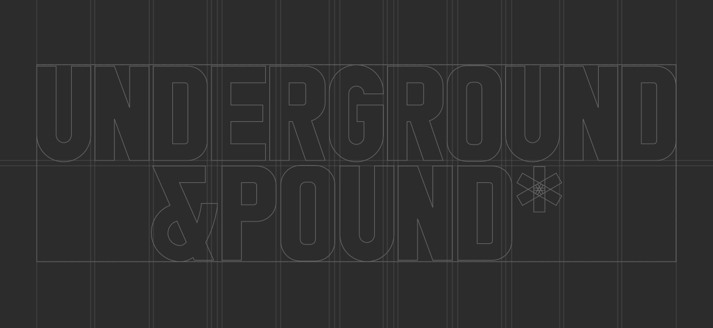
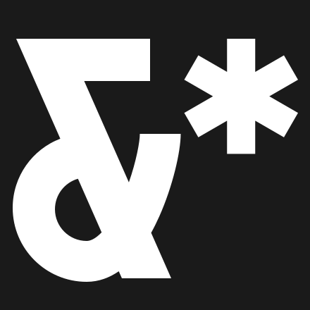
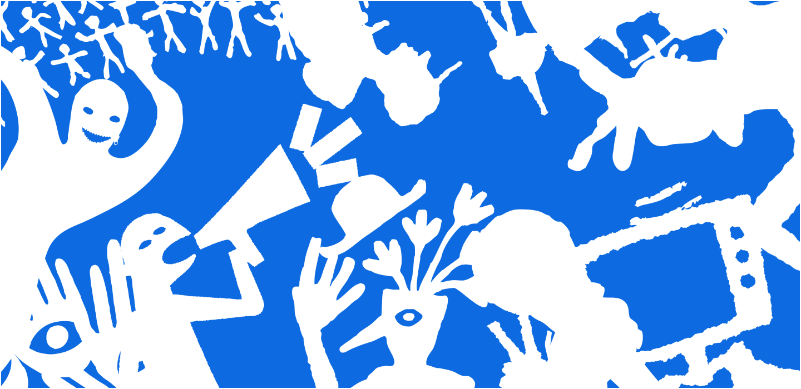
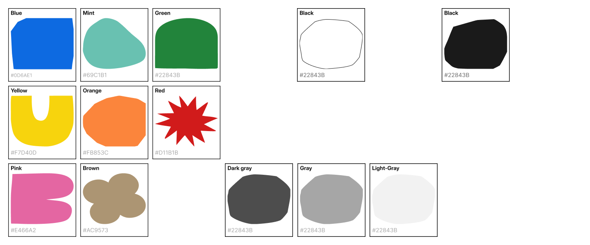
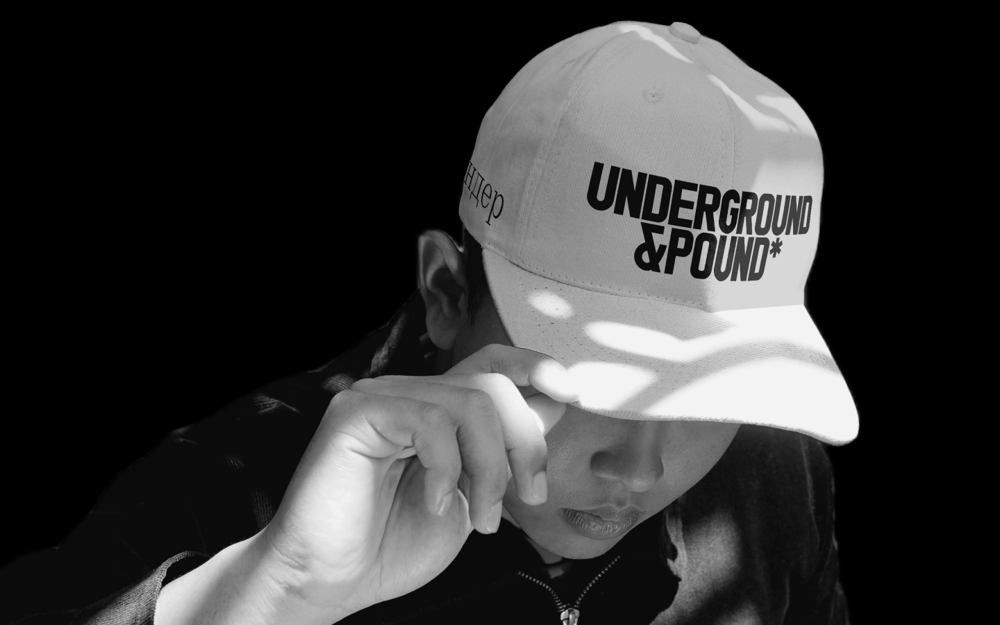
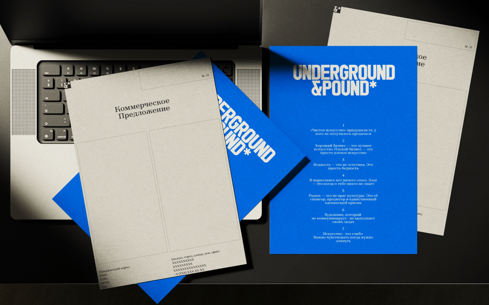
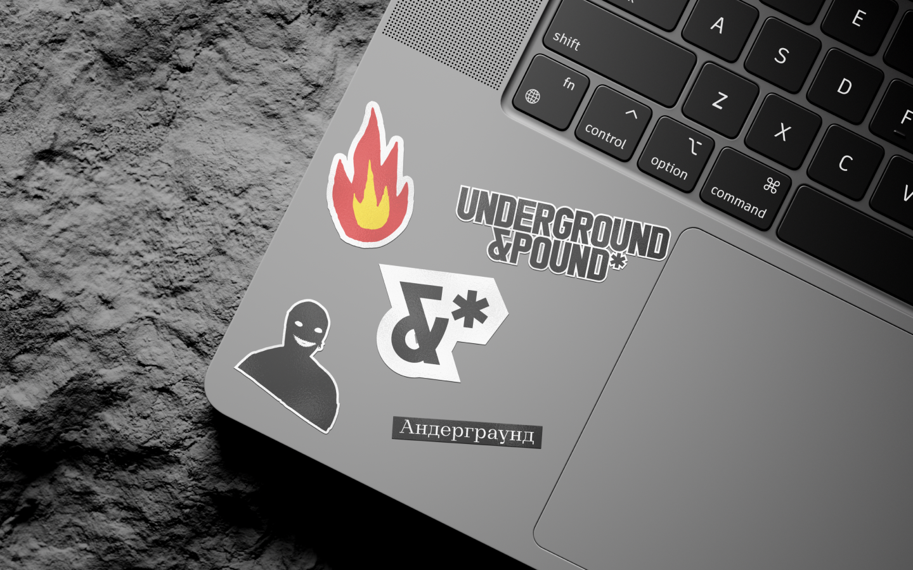

Свобода
Открытость
Смелость
Провокация
Ирония
Эксперимент
Любопытство
Независимость
[Кто мы]
Платформа посвященная коллаборациям
современных художников и больших брендов
UG&P - помогает бизнесу и художникам с
[Миссия]
Показать художникам, как строится путь от собственной практики до сотрудничества с крупным брендом.
[Суть]
Точка встречи искусства и большого бизнеса.
[Tone of Voice]
Говорим прямо. Можем подколоть бренд, художника или сам рынок, если есть за что. Не используем академический язык, арт-критику ради арт-критики и корпоративный новояз.
Не стараемся понравиться всем
Логотип
Типографический логотип/


Лого может растягиваться и занимать
100% формата

Амперсанд является нашей эмблемой
и символизирует коллаборацию
Типографика
Taler — эклектичная брусковая антиква с прямоугольными, немного вытянутыми засечками и жёсткой пластикой. Грубый и элегантный одновременно — Taler подойдёт для заголовков и небольших кеглей, для набора и акциденции, для текстов о XIX и XXI веках

Иллюстрации
Мы используем простые примитивные и брутильные иллюстрации, чтобы подчеркнуть андерграундность и стритовость нашего бренда
Иллюстрации были отрисованы в Krea и вручную в Фотошопе

Цветовая палитра
Была собрана гибкая цветовая c высокой контрастностью . Палитра должна отсылать к ризографии и подпольной печати, что подчеркивает андерграундность медиа

Носители




